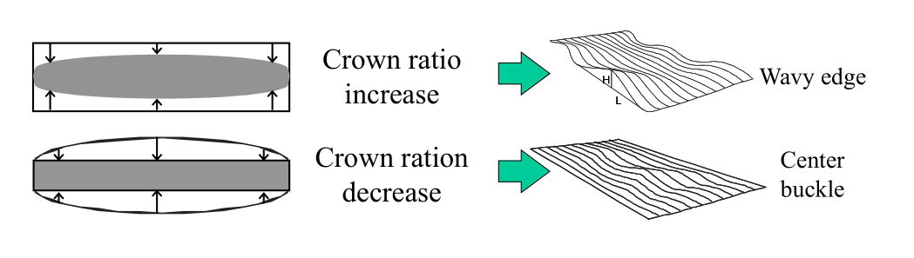
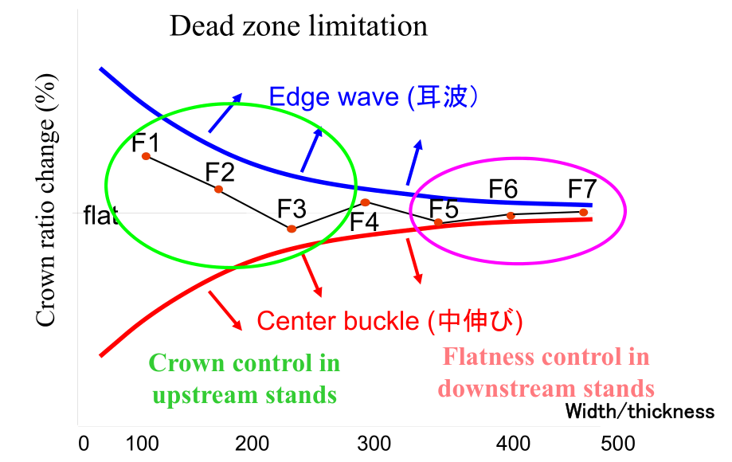

凸度分配和板形的关系¶
热轧七机架连轧，从中间坯到F7出口成品，精轧模型确定了各个机架的负荷分配，板形模型在精轧模型的基础上确定了各个机架的凸度分配。凸度分配的策略是板形设定模型的主旋律。
浪形和凸度的关系¶
凸度分配的好坏直接影响了带钢的浪形，因此带钢的浪形缺陷通过机架间的凸度分配，和带钢凸度之间建立关系。上游机架凸度小同时辊缝大，而下游机架凸度大同时辊缝小，会导致边浪缺陷。上游机架凸度大同时辊缝大，而下游机架凸度小同时辊缝小，会导致中浪缺陷。为了有效描述板形，我们引入了比例凸度的概念，比例凸度指的是当前机架的凸度和当前带钢厚度的比值。

因此，浪形和凸度之间的关系依靠“比例凸度的变化”进行衔接。热连轧前后机架之间比例凸度不同，比例凸度的变化如果在允许的范围内，则不会出现中浪和边浪，但是如果比例凸度的变化超过了允许的范围，则必然产生带钢的浪形。这里所允许的范围被称作死区。如下图所示为死区。从F1到F7，死区区间大小逐渐收窄，形成喇叭口。

在板形模型中，用应变差（differential ）的概念来表示比例凸度变化在浪形死区上的分布情况。比如在某一机架出口，此处的应变差指的是出口的比例凸度和入口有效比例凸度的差值。什么是“入口有效比例凸度”？也就是入口的比例凸度减去入口的应变差。应变差的变化就是模型对“比例凸度变化”的具体描述。
浪形和凸度关系的数学证明¶
在某一机架，我们假设带钢宽度方向上中心部位的入口厚度为 ，中心入口长度为 ，则机架出口的中心部位厚度为 ，中心部位长度为 。再假设边部入口厚度为 ，边部入口长度为 ，则机架出口的边部出口厚度为 ，边部出口长度为 。
根据体积不变定律，在宽度不变的情况下，有如下的关系。 $$ H_{c} \cdot L_{c} =h_{c} \cdot l_{c} $$ $$ H_{e} \cdot L_{e} =h_{e} \cdot l_{e} $$
将以上两个式子上下相处再变换，我们获得： $$ \frac{ l_{e}} { l_{c}} = \frac{ H_{e}} { H_{c}} \cdot\frac{ h_{c}} { h_{e}} \cdot\frac{ L_{e}} { L_{c}} $$ 将式子两边取对数，我们获得： $$ ln (\frac{ l_{e}} { l_{c}} )= ln (\frac{ H_{e}} { H_{c}} \cdot\frac{ h_{c}} { h_{e}} \cdot\frac{ L_{e}} { L_{c}}) $$ 将上式右边拆分，可以获得： $$ ln (\frac{ l_{e}} { l_{c}} )= ln (\frac{ H_{e}} { H_{c}}) - ln (\frac{ h_{e}} { h_{c}} ) + ln (\frac{ L_{e}} { L_{c}}) $$ 这四个量都是无穷小量，因此可以利用等价无穷小，当 趋向于1时， 的等价无穷小为 。 将上式转化成如下公式。 $$ \frac{ l_{e}- l_{c}} { l_{c}} = \frac{ h_{c}- h_{e} } { h_{c}} -\frac{ H_{c}- H_{e} } { H_{c}} +\frac{ L_{e} - L_{c}} { L_{c}} $$ 在上式中，$$\frac{ l_{e}- l_{c}} { l_{c}} \frac{ h_{c}- h_{e} } { h_{c}} \frac{ h_{c}- h_{e} } { h_{c}} $$可以表征为带钢的出口单位凸度。因此上式最终转化为： $$ \epsilon_{exit} = Cp_{exit} - (Cp_{entry} -\epsilon_{entry} ) = Cp_{exit} - Cp_{entry_effct} $$ 式中， 为长度方向上的应变差， 为单位凸度或比例凸度， 此机架入口的有效单位凸度。有效单位凸度的物理含义是，消除内部应力和金属横向流动的单位凸度。